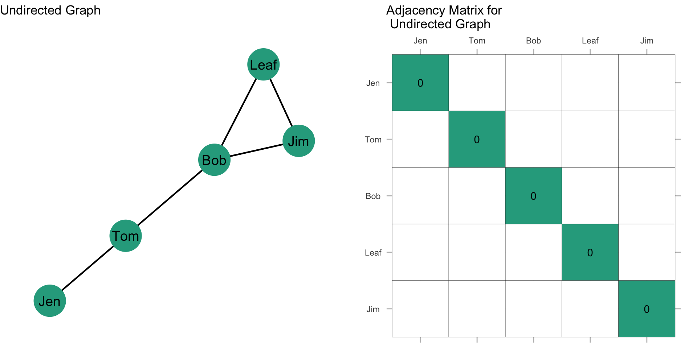
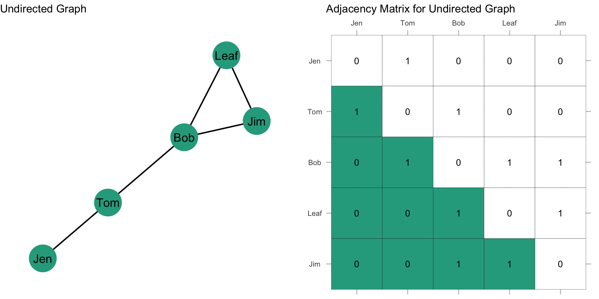
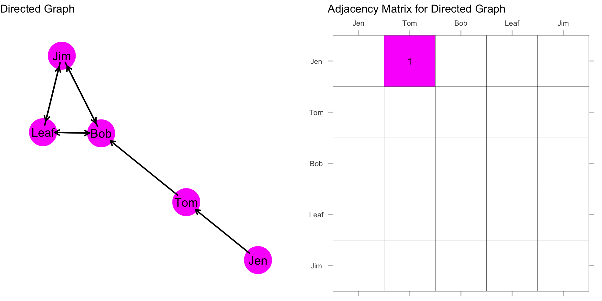
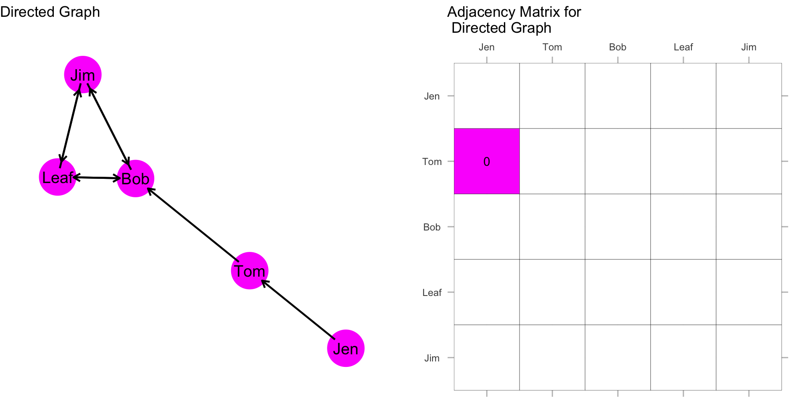

Network Data Structures
Motivating Problem
Review the figure below, and consider the following problem: Devise a route in which you could cross all seven bridges.
Now, consider a different problem: Devise a route in which you could cross all seven bridges, but crossing each of the seven bridges only once.
Did you figure it out?
Konigsberg Bridge Problem
Leonard Euler worked on this problem in the mid-18th century, eventually representing the solution with a set of points and lines. For a great overview of the problem (and some interesting history), check out this video.
Recall the discussion from the Introduction to Social Network Analysis for Crime Analysts chapter regarding the importance of conceptualization and operationalization in Network Science and how graph theory provides a foundation for operationalizing concepts of interest among network scientists.
By the end of the chapter, you should be able to answer these questions:
- How can we represent networks using graphs and graph notation?
- How can we represent undirected and directed networks using matrices?
Graph Notation
Let’s start with some definitions. The definition of a graph is \(G = (N,L)\), where \(N = {n_1, n_2..., n_g}\) defines the set of nodes and \(L = {l_1, l_2..., l_L}\) defines the set of edges. This definition simply states that there are \(N\) nodes and \(L\) edges in a graph.
Two nodes, \(n_i\) and \(n_j\) are called adjacent if the line \(l_k = (n_i, n_j)\). What this means is that in the graph, there exists a line between nodes i and j.
Node Sets
As discussed in the “Basic Data Elements” section of the Introduction to Social Network Analysis for Crime Analysts chapter, the directionality of a graph indicates whether the edges are undirected or directed. In an undirected graph, the order of the nodes does not matter. In other words, \(l_k = (n_i, n_j) = (n_j, n_i)\). This is to say that if there exists a line between nodes i and j, then a line exists between j and i. (This may seem obvious, but will make more sense why we talk about it this way when we get to directed graphs.)
Adjacency
Two nodes, \(n_i\) and \(n_j\) are adjacent if the link \(l_k = (n_i,n_j)\). This is to say that in the graph, there exists an edge between nodes i and j. For a set of relations, \(X\), we can define a matrix which represents these relations. We commonly use an adjacency matrix, where each node is listed on the row and the column. The \(i_{th}\) row and the \(j_{th}\) column of \(X_{ij}\) records the value of a tie from i to j. In this approach, \(X\), can be thought of as a variable. The presence or absence of values in the cells represent variation. In the Introduction to Social Network Analysis for Crime Analysts chapter we covered “structural variables”. The data object \(X\) is how we go about examining structural variables.
Here are some important definitions that we will come across as we talk about network data structures:
- Scalar-a single number
- Column vector-a column of numbers
- Row vector-a row of numbers
- Matrix-a rectangular array of numbers
- Order-number of rows and columns defining the matrix
- Square matrix-number of rows and columns of matrix are equal
Undirected, Binary Graphs
A plot of a network is sometimes referred to as a sociogram. Here is a sociogram for an undirected network where the ties are represented as zeros and ones:
We can represent the graph as a matrix using an adjacency matrix (sometimes called a sociomatrix):
In most instances, we do not allow self-nominations, so the diagonal of the matrix is usually undefined or set to zero. In networks that allow self-nominations, you can have values on the diagonal. These are referred to as loops.

In the first row, i is connected to the second row only: \(X_{12}=1; X_{15}=0\) (where \(X_{ij}\) refers to the \(i^{th}\) row and the \(j^{th}\) column of the matrix).
Since this graph is undirected, it is symmetric about the diagonal. This means that \(X_{ij} = X_{ji}\) or that the \(i^{th}\) column is the transposition of the \(j^{th}\) row, as shown in the figure.
Now, what does the rest of the matrix look like? Fill in the values in the matrix based on the graph.
Done? It should look like this:
The highlighted section here is called the upper triangle of the matrix. The sum of the upper triangle should equal the number of edges in the graph.
The other highlighted section here is called the lower triangle of the matrix. The sum of the lower triangle should also equal the number of edges in the graph.

Alternatively, we could sum all the elements and divide by 2.
Directed, Binary Graphs
In a directed graph, the order of the nodes does matter. Specifically, \(l_k1 = (n_i, n_j) \neq (n_j, n_i) = l_k2\). As we did above, we can use an adjacency matrix to represent this information in matrix form.
What is different in our matrix when the graph is directed?
In the first row, i sends to the second row: \(X_{12}=1\).

But, in the second row, j does not send \(X_{21}=0\). The Jen/Tom dyad is asymmetric. Directed graphs permit this asymmetry because \(l_k1 = (n_i, n_j) \neq (n_j, n_i) = l_k2\).

What about the Leaf/Bob dyad? Is it asymmetric or is it symmetric?
Now, what does the rest of the matrix look like? Fill in the values in the matrix based on the graph.
Done? It should look like this:

Note that because we are allowing directionality to matter, the total number of edges in the network is just the sum of the entire matrix (which is different from undirected graphs where we divide that sum by 2).
Test your Knowledge
What was the key question behind the Konigsberg bridge problem? How did Euler represent this problem using points and lines? What was the significance of this representation?
How is a graph represented in terms of nodes and edges? What does the notation \(G = (N,L)\) mean?
What does it mean for two nodes to be adjacent in a graph?
In an undirected graph, how are the connections between nodes represented? How is this different from a directed graph?
In an adjacency matrix, what does the value in the \(i^{th}\) row and \(j^{th}\) column represent?
What is the difference between an undirected and a directed adjacency matrix? In an undirected graph, is the \(i^{th}\) row equal to the \(j^{th}\) column? What about for a directed graph?
Define the following terms as they relate to matrices: Scalar, Column vector, Row vector, Matrix, Square matrix, Order of a matrix.
Summary
This chapter has how to represent networks using matrices. In the next chapter, we will start looking at how to analyze these matrices.